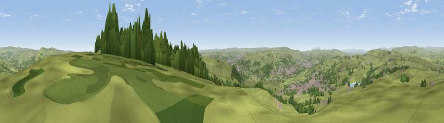

Viewpoint near Silsden
#7418 in England · top 4% of its area beats it · near SilsdenWhere it is
The exact computed spot (SE 06338 47125). Click the marker for map links.
The view, rendered

A 360° render of this exact spot computed from the terrain model, tree cover and land cover — summer colours, afternoon light, calibrated against photographs of famous viewpoints. Real trees, hedges and buildings will differ in detail.
The panorama
Grey silhouette: terrain skyline in each direction (720 bearings, Earth curvature and refraction included). Dashed green: skyline with trees (+15 m) and buildings (+8 m) as obstacles. Blue strip: how far the ground is visible on each bearing.
Where the view opens
Wedge length = distance to the farthest visible ground on that bearing (vegetation-aware). Rings at 10, 25 and 50 km.
What fills the view
86% grassland · 9% woodland · 5% built-up
Angular shares of the visible panorama (visual magnitude), not map area. Landscape diversity 0.22 (0–1 Shannon).
Key numbers
More beautiful places nearby
The staircase of upgrades: each row has a higher view potential than everything closer. Driving times are estimates from straight-line distance, calibrated against real road routing — check an actual route before setting out.
| Place | Direction | Drive | Score |
|---|---|---|---|
| Viewpoint near Addingham | E · 1 km | ~2 min | 68.9 |
| Beamsley Beacon | NE · 6 km | ~14 min | 69.0 |
| Viewpoint near Baildon | SE · 11 km | ~20 min | 70.4 |
| Viewpoint near Embsay | NW · 12 km | ~22 min | 74.5 |
| Cracoe Fell | NNW · 14 km | ~25 min | 75.1 |
| Viewpoint near Otley | ESE · 14 km | ~25 min | 77.5 |
| Viewpoint near East Witton | NNE · 39 km | ~58 min | 77.8 |
| Little Ingleborough | NW · 41 km | ~61 min | 78.8 |
53.92023, -1.90499 · source: screening · position refined by local search. Computed location — check access rights before visiting.